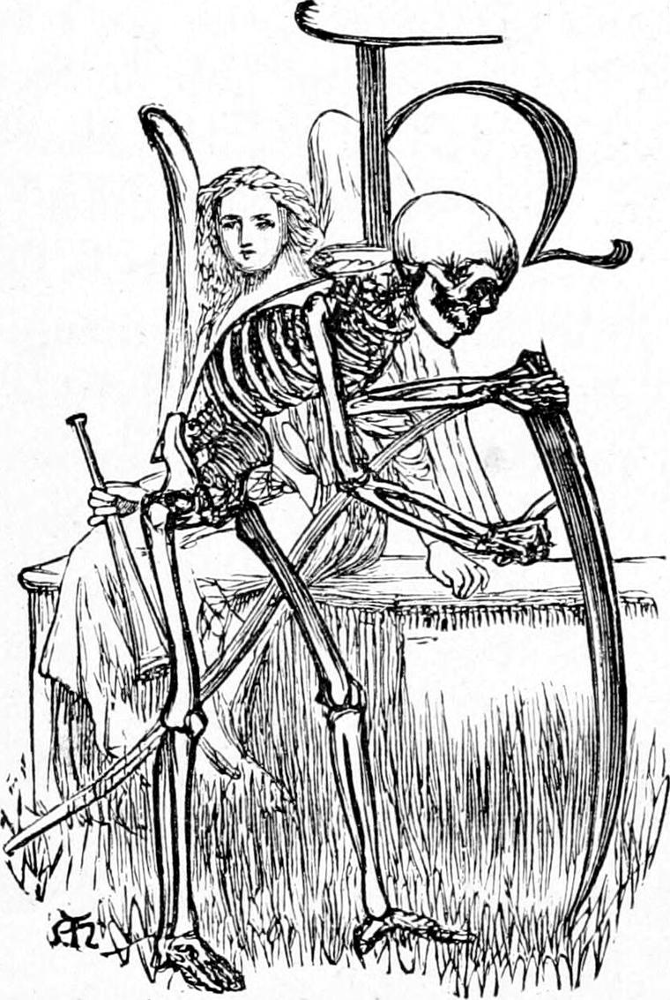
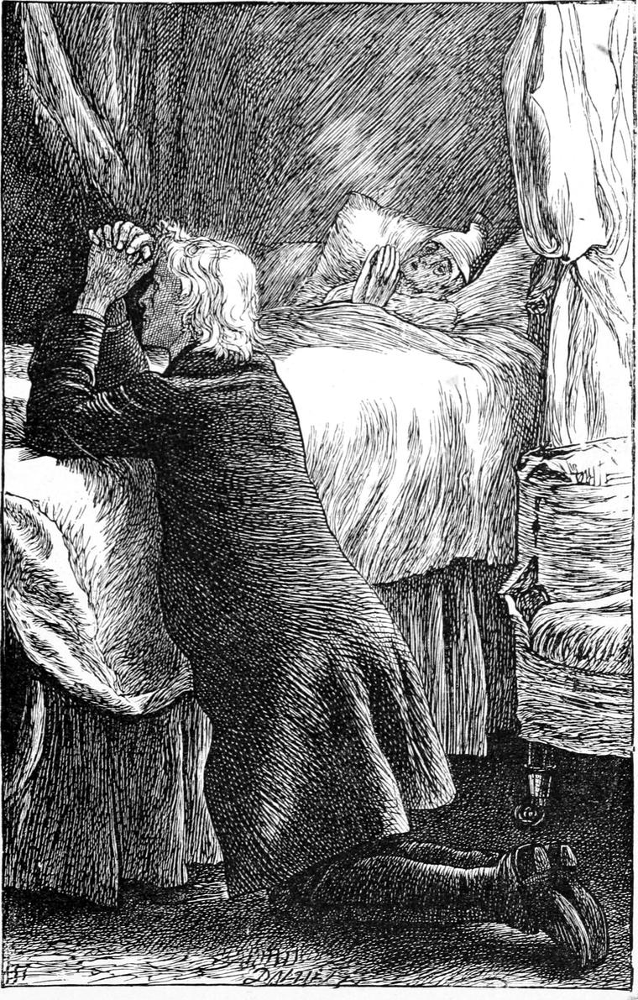
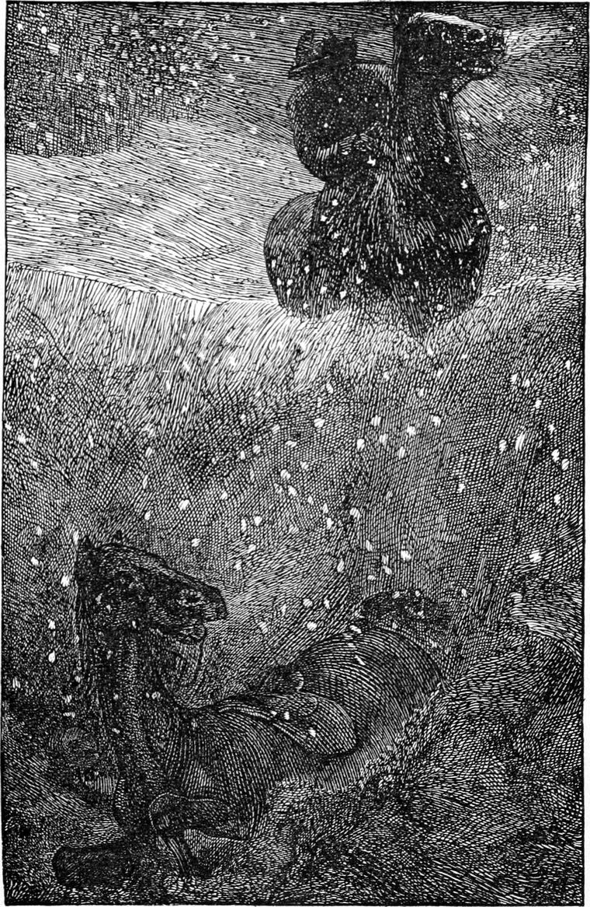

How dreary the old house looked as we approached it through the gathering darkness! All the light appeared to come from the snow which rested wherever it could lie—on roofs and window ledges and turrets. Even on the windward walls, every little roughness sustained its own frozen patch, so that their grey was spotted all over with whiteness. Not a glimmer shone from the windows.
“Nobody lives there, father,” I said,—“surely?”
“It does not look very lively,” he answered.
The house stood upon a bare knoll. There was not a tree within sight. Rugged hills arose on all sides of it. Not a sound was heard but the moan of an occasional gust of wind. There was a brook, but it lay frozen beneath yards of snow. For miles in any direction those gusts might wander without shaking door or window, or carrying with them a puff of smoke from any hearth. We were crossing the yard at the back of the house, towards the kitchen-door, for the front door had not been opened for months, when we recognized the first sign of life. That was only the low of a bullock. As we dismounted on a few feet of rough pavement which had been swept clear, an old woman came to the door, and led us into a dreary parlour without even a fire to welcome us.
I learned afterwards that the laird, from being a spendthrift in his youth, had become a miser in his age, and that every household arrangement was on the narrowest scale. From wasting righteous pounds, he had come to scraping unrighteous farthings.
After we had remained standing for some time, the housekeeper returned, and invited my father to go to the laird’s room. As they went, he requested her to take me to the kitchen, which, after conducting him, she did. The sight of the fire, although it was of the smallest, was most welcome. She laid a few more peats upon it, and encouraged them to a blaze, remarking, with a sidelong look: “We daren’t do this, you see, sir, if the laird was about. The honest man would call it waste.”
“Is he dying?” I asked, for the sake of saying something; but she only shook her head for reply, and, going to a press at the other end of the large, vault-like kitchen, brought me some milk in a basin, and some oatcake upon a platter, saying,
“It’s not my house, you see, or I would have something better to set before the minister’s son.”
I was glad of any food however, and it was well for me that I ate heartily. I had got quite warm also before my father stepped into the kitchen, very solemn, and stood up with his back to the fire. The old woman set him a chair, but he neither sat down nor accepted the refreshment which she humbly offered him.
“We must be going,” he objected, “for it looks stormy, and the sooner we set out the better.”
“I’m sorry I can’t ask you to stop the night,” she said, “for I couldn’t make you comfortable. There’s nothing fit to offer you in the house, and there’s not a bed that’s been slept in for I don’t know how long.”
“Never mind,” said my father cheerfully. “The moon is up already, and we shall get home I trust before the snow begins to fall. Will you tell the man to get the horses out?”
When she returned from taking the message, she came up to my father and said, in a loud whisper,
“Is he in a bad way, sir?”
“He is dying,” answered my father.
“I know that,” she returned. “He’ll be gone before the morning. But that’s not what I meant. Is he in a bad way for the other world? That’s what I meant, sir.”
“Well, my good woman, after a life like his, we are only too glad to remember what our Lord told us—not to judge. I do think he is ashamed and sorry for his past life. But it’s not the wrong he has done in former time that stands half so much in his way as his present fondness for what he counts his own. It seems like to break his heart to leave all his little bits of property—particularly the money he has saved; and yet he has some hope that Jesus Christ will be kind enough to pardon him. I am afraid he will find himself very miserable though, when he has not one scrap left to call his own—not a pocket-knife even.”
“It’s dreadful to think of him flying through the air on a night like this,” said she.
“My good woman,” returned my father, “we know nothing about where or how the departed spirit exists after it has left the body. But it seems to me just as dreadful to be without God in the world, as to be without him anywhere else. Let us pray for him that God may be with him wherever he is.”
So saying, my father knelt down, and we beside him, and he prayed earnestly to God for the old man. Then we rose, mounted our horses, and rode away.

We were only about halfway home, when the clouds began to cover the moon, and the snow began to fall. Hitherto we had got on pretty well, for there was light enough to see the track, feeble as it was. Now, however, we had to keep a careful lookout. We pressed our horses, and they went bravely, but it was slow work at the best. It got darker and darker, for the clouds went on gathering, and the snow was coming down in huge dull flakes. Faster and thicker they came, until at length we could see nothing of the road before us, and were compelled to leave all to the wisdom of our horses. My father, having great confidence in his own little mare, which had carried him through many a doubtful and difficult place, rode first. I followed close behind. He kept on talking to me very cheerfully—I have thought since—to prevent me from getting frightened. But I had not a thought of fear. To be with my father was to me perfect safety. He was in the act of telling me how, on more occasions than one, Missy had got him through places where the road was impassable, by walking on the tops of the walls, when all at once both our horses plunged into a gulf of snow. The more my mare struggled, the deeper we sank in it. For a moment I thought it was closing over my head.
“Father! father!” I shouted.
“Don’t be frightened, my boy,” cried my father, his voice seeming to come from far away. “We are in God’s hands. I can’t help you now, but as soon as Missy has got quieter, I shall come to you. I think I know whereabouts we are. We’ve dropped right off the road. You’re not hurt, are you?”
“Not in the least,” I answered. “I was only frightened.”
A few moments more, and my mare lay or rather stuck quiet, with her neck and head thrown back, and her body deep in the snow. I put up my hands to feel. It rose above my head farther than I could reach. I got clear of the stirrups and scrambled up, first on my knees, and then on my feet. Standing thus upon the saddle, again I stretched my hands above my head, but still the broken wall of snow ascended above my reach. I could see nothing of my father, but I heard him talking to Missy. My mare soon began floundering again, so that I tumbled about against the sides of the hole, and grew terrified lest I should bring the snow down. I therefore cowered upon the mare’s back until she was quiet again. “Woa! Quiet, my lass!” I heard my father saying, and it seemed his Missy was more frightened than mine.
My fear was now quite gone, and I felt much inclined to laugh at the fun of the misadventure. I had as yet no idea of how serious a thing it might be. Still I had sense enough to see that something must be done—but what? I saw no way of getting out of the hole except by trampling down the snow upon the back of my poor mare, and that I could not think of; while I doubted much whether my father even could tell in what direction to turn for help or shelter.

Finding our way home, even if we got free, seemed out of the question. Again my mare began plunging violently, and this time I found myself thrown against some hard substance. I thrust my hand through the snow, and felt what I thought the stones of one of the dry walls common to the country. I might clear away enough of the snow to climb upon that; but then what next—it was so dark?
“Ranald!” cried my father; “how do you get on?”
“Much the same, father,” I answered.
“I’m out of the wreath,” he returned. “We’ve come through on the other side. You are better where you are I suspect, however. The snow is warmer than the air. It is beginning to blow. Pull your feet out and get right upon the mare’s back.”
“That’s just where I am, father—lying on her back, and pretty comfortable,” I rejoined.
All this time the snow was falling thick. If it went on like this, I should be buried before morning, and the fact that the wind was rising added to the danger of it. We were at the wrong end of the night too.
“I’m in a kind of ditch, I think, father,” I cried—the place we fell off on one side and a stone wall on the other.”
“That can hardly be, or I shouldn’t have got out,” he returned. “But now I’ve got Missy quiet, I’ll come to you. I must get you out, I see, or you will be snowed up. Woa, Missy! Good mare! Stand still.”
The next moment he gave a joyous exclamation.
“What is it, father?” I cried.
“It’s not a stone wall; it’s a peat-stack. That is good.”
“I don’t see what good it is. We can’t light a fire.”
“No, my boy; but where there’s a peat-stack, there’s probably a house.”
He began uttering a series of shouts at the top of his voice, listening between for a response. This lasted a good while. I began to get very cold.
“I’m nearly frozen, father,” I said, “and what’s to become of the poor mare—she’s got no clothes on?”
“I’ll get you out, my boy; and then at least you will be able to move about a little.”
I heard him shovelling at the snow with his hands and feet.
“I have got to the corner of the stack, and as well as I can judge you must be just round it,” he said.
“Your voice is close to me,” I answered.
“I’ve got a hold of one of the mare’s ears,” he said next. “I won’t try to get her out until I get you off her.”
I put out my hand, and felt along the mare’s neck. What a joy it was to catch my father’s hand through the darkness and the snow! He grasped mine and drew me towards him, then got me by the arm and began dragging me through the snow. The mare began plunging again, and by her struggles rather assisted my father. In a few moments he had me in his arms.
“Thank God!” he said, as he set me down against the peat-stack. “Stand there. A little farther. Keep well off for fear she hurt you. She must fight her way out now.”
He went back to the mare, and went on clearing away the snow. Then I could hear him patting and encouraging her. Next I heard a great blowing and scrambling, and at last a snort and the thunder of hoofs.
“Woa! woa! Gently! gently!—She’s off!” cried my father.
Her mother gave one snort, and away she went, thundering after her. But their sounds were soon quenched in the snow.
“There’s a business!” said my father. “I’m afraid the poor things will only go farther to fare the worse. We are as well without them, however; and if they should find their way home, so much the better for us. They might have kept us a little warmer though. We must fight the cold as we best can for the rest of the night, for it would only be folly to leave the spot before it is light enough to see where we are going.”
It came into my mind suddenly how I had burrowed in the straw to hide myself after running from Dame Shand’s. But whether that or the thought of burrowing in the peat-stack came first, I cannot tell. I turned and felt whether I could draw out a peat. With a little loosening I succeeded.
“Father,” I said, “couldn’t we make a hole in the peat-stalk, and build ourselves in?”
“A capital idea, my boy!” he answered, with a gladness in his voice which I venture to attribute in part to his satisfaction at finding that I had some practical sense in me. “We’ll try it at once.”
“I’ve got two or three out already,” I said, for I had gone on pulling, and it was easy enough after one had been started.
“We must take care we don’t bring down the whole stack though,” said my father.
“Even then,” I returned, “we could build ourselves up in them, and that would be something.”
“Right, Ranald! It would be only making houses to our own shape, instead of big enough to move about in—turning crustaceous animals, you know.”
“It would be a peat-greatcoat at least,” I remarked, pulling away.
“Here,” he said, “I will put my stick in under the top row. That will be a sort of lintel to support those above.”
He always carried his walking-stick whether he rode or walked.
We worked with a will, piling up the peats a little in front that we might with them build up the door of our cave after we were inside. We got quite merry over it.
“We shall be brought before the magistrates for destruction of property,” said my father.
“You’ll have to send Andrew to build up the stack again—that’s all.”
“But I wonder how it is that nobody hears us. How can they have a peat-stack so far from the house?”
“I can’t imagine,” I said; “except it be to prevent them from burning too many peats. It is more like a trick of the poor laird than anybody else.”
Every now and then a few would come down with a rush, and before long we had made a large hole. We left a good thick floor to sit upon.
Creeping in, we commenced building up the entrance. We had not proceeded far, however, before we found that our cave was too small, and that as we should have to remain in it for hours, we must find it very cramped. Therefore, instead of using any more of the peats already pulled out, we finished building up the wall with others fresh drawn from the inside. When at length we had, to the best of our ability, completed our immuring, we sat down to wait for the morning—my father as calm as if he had been seated in his study-chair, and I in a state of condensed delight; for was not this a grand adventure—with my father to share it, and keep it from going too far? He sat with his back leaning against the side of the hole, and I sat between his knees, and leaned against him. His arms were folded round me; and could ever boy be more blessed than I was then? The sense of outside danger; the knowledge that if the wind rose, we might be walled up in snow before the morning; the assurance of present safety and good hope—all made such an impression upon my mind that ever since when any trouble has threatened me, I have invariably turned first in thought to the memory of that harbour of refuge from the storm. There I sat for long hours secure in my father’s arms, and knew that the soundless snow was falling thick around us, and marked occasionally the threatening wail of the wind like the cry of a wild beast scenting us from afar.
“This is grand, father,” I said.
“You would like better to be at home in bed, wouldn’t you?” he asked, trying me.
“No, indeed, I should not,” I answered, with more than honesty; for I felt exuberantly happy.
“If only we can keep warm,” said my father. “If you should get very cold indeed, you must not lose heart, my man, but think how pleasant it will be when we get home to a good fire and a hot breakfast.”
“I think I can bear it all right. I have often been cold enough at school.”
“This may be worse. But we need not anticipate evil: that is to send out for the suffering. It is well to be prepared for it, but it is ill to brood over a fancied future of evil. In all my life, my boy—and I should like you to remember what I say—I have never found any trial go beyond what I could bear. In the worst cases of suffering, I think there is help given which those who look on cannot understand, but which enables the sufferer to endure. The last help of that kind is death, which I think is always a blessing, though few people can regard it as such.”
I listened with some wonder. Without being able to see that what he said was true, I could yet accept it after a vague fashion.
“This nest which we have made to shelter us,” he resumed, “brings to my mind what the Psalmist says about dwelling in the secret place of the Most High. Everyone who will, may there, like the swallow, make himself a nest.”
“This can’t be very like that, though, surely, father,” I ventured to object.
“Why not, my boy?”
“It’s not safe enough, for one thing.”
“You are right there. Still it is like. It is our place of refuge.”
“The cold does get through it, father.”
“But it keeps our minds at peace. Even the refuge in God does not always secure us from external suffering. The heart may be quite happy and strong when the hands are benumbed with cold. Yes, the heart even may grow cold with coming death, while the man himself retreats the farther into the secret place of the Most High, growing more calm and hopeful as the last cold invades the house of his body. I believe that all troubles come to drive us into that refuge—that secret place where alone we can be safe. You will, when you go out into the world, my boy, find that most men not only do not believe this, but do not believe that you believe it. They regard it at best as a fantastic weakness, fit only for sickly people. But watch how the strength of such people, their calmness and common sense, fares when the grasp of suffering lays hold upon them. It was a sad sight—that abject hopeless misery I saw this afternoon. If his mind had been an indication of the reality, one must have said that there was no God—no God at least that would have anything to do with him. The universe as reflected in the tarnished mirror of his soul, was a chill misty void, through which blew the moaning wind of an unknown fate. As near as ever I saw it, that man was without God and without hope in the world. All who have done the mightiest things—I do not mean the showiest things—all that are like William of Orange—the great William, I mean, not our King William—or John Milton, or William Penn, or any other of the cloud of witnesses spoken of in the Epistle to the Hebrews—all the men I say who have done the mightiest things, have not only believed that there was this refuge in God, but have themselves more or less entered into the secret place of the Most High. There only could they have found strength to do their mighty deeds. They were able to do them because they knew God wanted them to do them, that he was on their side, or rather they were on his side, and therefore safe, surrounded by God on every side. My boy, do the will of God—that is, what you know or believe to be right, and fear nothing.”
I never forgot the lesson. But my readers must not think that my father often talked like this. He was not at all favourable to much talk about religion. He used to say that much talk prevented much thought, and talk without thought was bad. Therefore it was for the most part only upon extraordinary occasions, of which this is an example, that he spoke of the deep simplicities of that faith in God which was the very root of his conscious life.
He was silent after this utterance, which lasted longer than I have represented, although unbroken, I believe, by any remark of mine. Full of inward repose, I fell asleep in his arms.
When I awoke I found myself very cold. Then I became aware that my father was asleep, and for the first time began to be uneasy. It was not because of the cold: that was not at all unendurable; it was that while the night lay awful in white silence about me, while the wind was moaning outside, and blowing long thin currents through the peat walls around me, while our warm home lay far away, and I could not tell how many hours of cold darkness had yet to pass before we could set out to find it,—it was not all these things together, but that, in the midst of all these, I was awake and my father slept. I could easily have waked him, but I was not selfish enough for that: I sat still and shivered and felt very dreary. Then the last words of my father began to return upon me, and, with a throb of relief, the thought awoke in my mind that although my father was asleep, the great Father of us both, he in whose heart lay that secret place of refuge, neither slumbered nor slept. And now I was able to wait in patience, with an idea, if not a sense of the present care of God, such as I had never had before. When, after some years, my father was taken from us, the thought of this night came again and again, and I would say in my heart: “My father sleeps that I may know the better that The Father wakes.”
At length he stirred. The first sign of his awaking was, that he closed again the arms about me which had dropped by his sides as he slept.
“I’m so glad you’re awake, father,” I said, speaking first.
“Have you been long awake then?”
“Not so very long, but I felt lonely without you.”
“Are you very cold? I feel rather chilly.”
So we chatted away for a while.
“I wonder if it is nearly day yet. I do not in the least know how long we have slept. I wonder if my watch is going. I forgot to wind it up last night. If it has stopped I shall know it is near daylight.”
He held his watch to his ear: alas! it was ticking vigorously. He felt for the keyhole, and wound it up. After that we employed ourselves in repeating as many of the metrical psalms and paraphrases of Scripture as we could recollect, and this helped away a good part of the weary time.
But it went very slowly, and I was growing so cold that I could hardly bear it.
“I’m afraid you feel very cold, Ranald,” said my father, folding me closer in his arms. “You must try not to go to sleep again, for that would be dangerous now. I feel more cramped than cold.”
As he said this, he extended his legs and threw his head back, to get rid of the uneasiness by stretching himself. The same moment, down came a shower of peats upon our heads and bodies, and when I tried to move, I found myself fixed. I could not help laughing.
“Father,” I cried, as soon as I could speak, “you’re like Samson: you’ve brought down the house upon us.”
“So I have, my boy. It was very thoughtless of me. I don’t know what we are to do now.”
“Can you move, father? I can’t,” I said.
“I can move my legs, but I’m afraid to move even a toe in my boot for fear of bringing down another avalanche of peats. But no—there’s not much danger of that: they are all down already, for I feel the snow on my face.”
With hands and feet my father struggled, but could not do much, for I lay against him under a great heap. His struggles made an opening sideways however.
“Father! father! shout,” I cried. “I see a light somewhere; and I think it is moving.”
We shouted as loud as we could, and then lay listening. My heart beat so that I was afraid I should not hear any reply that might come. But the next moment it rang through the frosty air.
“It’s Turkey! That’s Turkey, father!” I cried. “I know his shout. He makes it go farther than anybody else.—Turkey! Turkey!” I shrieked, almost weeping with delight.
Again Turkey’s cry rang through the darkness, and the light drew wavering nearer.
“Mind how you step, Turkey,” cried my father. “There’s a hole you may tumble into.”
“It wouldn’t hurt him much in the snow,” I said.
“Perhaps not, but he would probably lose his light, and that we can hardly afford.”
“Shout again,” cried Turkey. “I can’t make out where you are.”
My father shouted.
“Am I coming nearer to you now?”
“I can hardly say. I cannot see well. Are you going along the road?”
“Yes. Can’t you come to me?”
“Not yet. We can’t get out. We’re upon your right hand, in a peat-stack.”
“Oh! I know the peat-stack. I’ll be with you in a moment.”
He did not however find it so easily as he had expected, the peats being covered with snow. My father gave up trying to free himself and took to laughing instead at the ridiculous situation in which we were about to be discovered. He kept directing Turkey, however, who at length after some disappearances which made us very anxious about the lantern, caught sight of the stack, and walked straight towards it. Now first we saw that he was not alone, but accompanied by the silent Andrew.
“Where are you, sir?” asked Turkey, throwing the light of the lantern over the ruin.
“Buried in the peats,” answered my father, laughing. “Come and get us out.”
Turkey strode up to the heap, and turning the light down into it said,
“I didn’t know it had been raining peats, sir.”
“The peats didn’t fall quite so far as the snow, Turkey, or they would have made a worse job of it,” answered my father.
Meantime Andrew and Turkey were both busy; and in a few moments we stood upon our feet, stiff with cold and cramped with confinement, but merry enough at heart.
“What brought you out to look for us?” asked my father.
“I heard Missy whinnying at the stable-door,” said Andrew. “When I saw she was alone, I knew something had happened, and waked Turkey. We only stopped to run to the manse for a drop of whisky to bring with us, and set out at once.”
“What o’clock is it now?” asked my father.
“About one o’clock,” answered Andrew.
“One o’clock!” thought I. “What a time we should have had to wait!”
“Have you been long in finding us?”
“Only about an hour.”
“Then the little mare must have had great trouble in getting home. You say the other was not with her?”
“No, sir. She’s not made her appearance.”
“Then if we don’t find her, she will be dead before morning. But what shall we do with you, Ranald? Turkey had better go home with you first.”
“Please let me go too,” I said.
“Are you able to walk?”
“Quite—or at least I shall be, after my legs come to themselves a bit.”
Turkey produced a bottle of milk which he had brought for me, and Andrew produced the little flask of whisky which Kirsty had sent; and my father having taken a little of the latter, while I emptied my bottle, we set out to look for young Missy.
“Where are we?” asked my father.
Turkey told him.
“How comes it that nobody heard our shouting, then?”
“You know, sir,” answered Turkey, “the old man is as deaf as a post, and I dare say his people were all fast asleep.”
The snow was falling only in a few large flakes now, which sank through the air like the moultings of some lovely bird of heaven. The moon had come out again, and the white world lay around us in lovely light. A good deal of snow had fallen while we lay in the peats, but we could yet trace the track of the two horses. We followed it a long way through the little valley into which we had dropped from the side of the road. We came to more places than one where they had been floundering together in a snow-wreath, but at length reached the spot where one had parted from the other. When we had traced one of the tracks to the road, we concluded it was Missy’s, and returned to the other. But we had not followed it very far before we came upon the poor mare lying upon her back in a deep runnel, in which the snow was very soft. She had put her forefeet in it as she galloped heedlessly along, and tumbled right over. The snow had yielded enough to let the banks get a hold of her, and she lay helpless. Turkey and Andrew, however, had had the foresight to bring spades with them and a rope, and they set to work at once, my father taking a turn now and then, and I holding the lantern, which was all but useless now in the moonlight. It took more than an hour to get the poor thing on her legs again, but when she was up, it was all they could do to hold her. She was so wild with cold, and with delight at feeling her legs under her once more, that she would have broken loose again, and galloped off as recklessly as ever. They set me on her back, and with my father on one side and Turkey on the other, and Andrew at her head, I rode home in great comfort. It was another good hour before we arrived, and right glad were we to see through the curtains of the parlour the glow of the great fire which Kirsty had kept up for us. She burst out crying when we made our appearance.